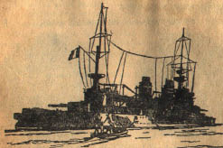

Türk’ün, 18 Mart Çanakkale zaferini kazanmakla o zamanki düşmanlarına indirdiği ağır darbenin ehemmiyeti sonraları daha iyi anlaşıldı.
Büyük Britanya Hükümeti İmparatorluk Müdafaa Encümeni Tarih Şubesi’nin kontrolü altında, resmî eserde, müttefiklerin 18 Mart mağlubiyetlerinin ve Çanakkale’de uğradıkları kayıpların ehemmiyeti hakkında bir hayli tafsilât vardır.
Türk topçu ateşi ve mayın dökücü gemisi yiğit Nusrat’ın mayınları yüzünden denizin dibine inen Bouvet, Irresistible, ve Ocean zırhlılarıyla ağır yaralanan Gaulois adlı Fransız hattı harp zırhlısından başka birçok düşman gemilerinin pek ağır bir surette hırpalanmış olduklarını İngiliz resmî vesikaları açıkça gösteriyorlar.
Yepyeni Queen Elizabeth süper drednotu ile yine İngiliz donanmasının iftihar ettiği yeni gemilerden Inflexible muharebe kruvazörü başta gelmek şartıyla o tarihî günde Boğaz’a saldırmış olan İngiliz ve Fransız zırhlılarının hepsi de Türk’ün ezici yumruğundan hisselerini almışlardı.
Queen Elizabeth dretnotu hizmete henüz girmiş yepyeni bir devdi. 45 çapında sekiz tane “38” santimetrelik ağır top taşıyordu ki, o zamana kadar bu derece büyük toplarla teçhiz olunmuş bir zırhlı henüz görülmemişti.
Aradan yarım asırlık bir müddet geçmiş bulunmasına rağmen bugün dahi bu kadar ağır top taşıyan zırhlıların parmakla sayılacak derecede az olduğu göz önünde bulundurulacak olursa bu dev toplu, dev gövdeli zırhlı azmanın 1915 yılında Boğaz’ın önünde görünmesinin ifade ettiği mâna kendiliğinden anlaşılır.
Queen Elizabeth’in inşaatı sona erip hizmete girdikten sonra sürat tecrübeleri yapılmış, fakat top tecrübeleri henüz yapılamadan 1914-18 Birinci Dünya Harbi çıkmıştı. Bir rivayete göre İngiltere Bahriye Nezareti, yeni zırhlının top atış tecrübeleri yapmak için mermilerini boş yere ve bir yüzen hedefe savuracağı yerde bu dev güllelerin Çanakkale’deki Türk istihkâmlarına karşı kullanılmasını düşünmüş ve yepyeni zırhlı da bu yüzden Türk sularına gönderilip müttefik donanmanın amiral gemisi olmuştu.
İngiliz Bahriye Nezareti’nin hesabı ve görüşü yerinde idi. Yeni drednot hem top tecrübeleri yapacak, hem de beher atışı kim bilir kaç bin sterline mal olan bu dev gülleler Türk’ün sinesinde patlayarak müttefiklere İstanbul yolunu açmış olacaklardı.
Bir taşla iki kuş vurmak kabilinden, atılacak her mermi ile katmerli bir başarı elde edilecekti ama, İngiliz amiralleri bu uzak görüşlü derin hesaplarında bir tek şeyi ihmal etmişlerdi: Türk’ün ezelî yiğitlik ve kahramanlığı...
1915 yılı 18 Martında ise neticeyi, insan boyunda gülleler atan dev toplar değil, Türk kahramanlığı tayin edecekti. Filbâki o tarihi günde, Mehmetçik o yüksek feveranlı, yüksek kudretli dev gülleleri, iman dolu göğsünde söndürmeğe muvaffak oldu, fennin sağladığı bütün imkânlardan faydalanan ezici üstünlükteki düşmanı Boğazlardan geçirtmedi.
Inflexible muharebe kruvazörü de devrin en yeni ve en korkunç teknelerinden biriydi. Gerektiği vakit muharebe hattında yer alıp tıpkı bir dretnot gibi harp eden, fakat icabında da yüksek süratinden faydalanarak kuvvetli düşmanların elinden yakasını kurtarabilecek bir kabiliyette olan bu güzel vahid-i harp, tabir caizse, hem kuvvetli bir pehlivan, hem de çevik bir koşucu idi. Bu itibarla Çanakkale istihkâmları karşısında yer almasından o zamanki düşmanlarımız pek çok şeyler bekliyorlardı.
Buna rağmen Inflexible muharebe kruvazörü de Mehmetçiğin kahramanlığı, türlü tehlikeyi göze aldıran küçük Nusrat mayın gemisi ile 8 Mart gecesi gizlice mayın tarlaları vücuda getiren Türk gemicilerinin engin yiğitlikleri karşısında da bir şeye muvaffak olamadı.
Hattâ bir şeye muvaffak olamamakla kalmadı, o paha biçilmez vasıflarına rağmen batıp gitmekten güç kurtuldu ki bunu İngiliz amiralliğinin resmî vesikalarında açıkça okumak mümkündür:
“Inflexible muharebe kruvazörü, halinin pek tehlikeli olmasına rağmen karanlıklar içinde ve ventilatör körükleri çalışamaz bir hale gelmiş oldukları vazifeleri başından ayrılmayan makinistlerinin, insan gücü üstündeki gayretleri sayesinde, süvarisi Miralay Filimor gemiyi Bozcaada’ya kadar getirmeye muvaffak oldu. Inflexible torpile çarptıktan bir buçuk saat sonra Bozcaada’nın şimal tarafına demirledi. Fakat yapılması mümkün olan şey de bundan ibaretti.
Fena halde yaralı gemi muayene edilince o haliyle Malta’ya gidemeyeceği anlaşıldı. Bu seyahati mümkün kılacak bir “koferdam = perde inşası lâzım geliyordu. Bu yapılmadan evvel geminin yola çıkması, onun hayatına mal olabilirdi.
Bundan başka Fransız amiral gemisi Suffren ile yarı batmış bir halde bulunan Gaulois zırhlısının da yeni bir vazife deruhte etmeden evvel mutlaka havuza alınıp tamir edilmelerine ihtiyaçları olduğu da anlaşıldı.
Gaulois ise Boğaz’dan çıktığı esnada öyle vahim ve korkunç vaziyette idi ki, zırhlının kurtulup kurtulamayacağı bir müddet şüpheli kaldı ise de nihayet “Tavşan” adalarının cenup grubundan “Drapano” adası sahilinde kumsala bindirildi.
* * *
Bütün bu felâketlerin hakikî sebebi keşif ve tâyin olununcaya kadar çok zaman geçmedi.
İşin hakikati ise şu idi ki 8 Mart gecesinde Türkler bizim haberimiz olmadan Erenköy körfezi içine ve sahile muvazi olarak yirmi tane mayın demirlemişler, bizim tarayıcı gemilerimiz de yaptıkları aramalarda bunlara tesadüf edememişlerdi. Türkler bu mayınları maksadı mahsusla bizim daima manevra yaptığımız bir sahaya dökmüşler, gösterdiğimiz bütün ihtiyatlara, basiretlere rağmen, baş döndürücü bir zafer kazanmışlardır.”
Müttefiklerin 18 Mart mağlûbiyetleri, yalnız kendilerine üç zırhlının kaybına, yarım düzine hattı harp gemisinin de feci bir şekilde hurdahâş olmalarına mal olmadı; teşebbüsün muvaffakiyetsizlikle neticelenmesi bütün dünyada derin akisler uyandırdığı gibi o derece ezici bir üstünlük karşısında Mehmetçiğin kazandığı parlak zafer de yurtta pek haklı iftiharlar yaratmış, kuvvei mâneviyeyi yükseltmişti.
O kadar ki zamanın padişahı Beşinci Mehmet Sultan Reşat, bu gerçekten yüksek zafer karşısında, kaleme sarılmış, bir şiir bile yazmıştı.
Derviş meşrepli padişah, Mehmetçiğin iman dolu çıplak göğsünü binlerce düşman mermisine siper ederek bu ateş tufanını o çelik göğüste söndürmüş olmasını şu güzel mısralarla canlandırıyor, Ulu Tanrı’ya hamd ü senalar ediyordu:
Savlet etmişti Çanakkale’ye bahr ü berden
Ehl-i İslâm’ın iki hasm-ı kavîsi birden.
Lâkin imdâd-i İlâhî yetişip ordumuza,
Oldu her bir neferi kale-i polat beden.
Asker evlâtlarımın pişgeh-i azminde,
Aczini eyledi idrâk, en nihayet düşman.
Kadr ü haysiyeti pâ-mâl olarak etdi firâr,
Kalb-i İslâm’a nüfuz eylemeye gelmişken.
Kapanıp secde-i şükrana Reşâd eyle dua,
Mülk-i İslâmı Hudâ eyleye dâim me’men.
* * *
Başta devrin hükümdarı gelmek şartıyla bütün Türkler 18 Mart zaferini içten gelen bir iftihar ve sevinçle kutlarlarken müttefiklerin bu feci hezimetleri siyaset âleminde derin akisler uyandırıyor, Yunanlıların müttefikler safında harbe katılmalarını geciktiriyor; Bulgarları bizim cepheye meylettiriyor; Boğazlar ve Karadeniz yoluyla cephane almayı uman ezelî düşmanlarımız Rusları pek acı hayal sükûtlarına uğratıyordu.
Boğazları zorlayıp geçmenin düşmanlarımız hesabına sağlayacağı menfaatler ölçülemeyecek kadar büyük olacaktı.
Bu sayede silâhsız ve cephanesiz Moskof orduları, müttefiklerimiz Alman ve Avusturya askerî kuvvetleri karşısında uğradıkları o korkunç mağlûbiyetlerden yakalarını kurtarabilecekler ve dolayısıyla da Çarlık Rusya’sı yıkılıp çökmeyecekti. Fazla olarak düşmanlarımız, İstanbul’u ele geçirmekle Türklerin harp dışı edilebileceklerine kesin olarak inanmışlardı. Halbuki bu düşüncenin ne kadar boş olduğunu daha sonraları yine dünyaya parmak ısırtacak yeni bir Türk mucizesi, İstiklâl harbi pekâlâ ispat edecekti. Zira Türk İstiklâl Savaşını kazandığı vakit İstanbul düşman işgali altında idi ve 1915 Martının 18. günü Boğaz’ı zorlayıp geçememiş olan İngiliz zırhlıları, fazlasıyla Boğaz sularında demirlemiş bulunuyorlardı.
Ancak zorlama teşebbüsünün bir başarısızlıkla nihayetlen-mesi de pek feci olmuştu. Zaten daha Türkler harbe girmeden evvel İstanbul’da İngiliz Büyük Elçisi Sir Lui Marlett daha 1914 yılı Ağustosunda, yani İngilizlerle Almanlar arasında harp yeni başlayıp Goben ve Breslau harp gemilerinin Çanakkale Boğaz’ına sığınmaları sırasında, Londra Hariciye Nezaretine gönderdiği mahrem bir şifrede Londra kabinesine Çanakkale Boğaz’ının zorlanıp geçilmesini tavsiye ediyor ve İstanbul’daki İngiliz ataşemiliterinin bu husustaki görüşlerini ve düşüncelerini de bildiriyordu.
Ataşemiliter bu mütalâalarında, donanmaya yetecek miktarda kara kuvvetleri de katıldığı takdirde, zorlama ve geçme teşebbüsünün başarı ile neticelenmesinin pek mümkün olduğunu yazıyordu. Ancak Sefir bu telgrafa: “Bir mağlûbiyet, yahut kesin olmayacak bir muvaffakiyet pek fena bir tesir icra eder” kaydını da ilâve ediyordu.
18 Mart 1915 günü yiğit Mehmetçik ve kahraman Türk gemicisi, çelikten yüzer kalelerinin sayısından ve ezici üstünlüğünden mağrur bir düşmana karşı kazandığı o parlak muvaffakiyetle İngiliz elçisinin birinci kehanetini boşa çıkarmış, fakat ikinci mütalâasının ne kadar yerinde olduğunu ispata muvaffak olmuştu.
Nitekim bu ilk muvaffakiyetsizlikten gereken dersi almamış görünen düşman, sonradan Boğaz’ı hem deniz, hem de kara kuvvetleriyle zorlamak sevdasına kapılacak ve yarımadaya yüz binlerce asker yığacak ve fakat ilk teşebbüsünde muvaffak olamadığı gibi, bu son teşebbüsünün de hüsranla neticelendiğini görecek ve tası tarağı toplayıp ve kat’î hezimeti kabul edip o toprakları karşısında bir kere daha pes edecekti ki bu da Türk’e ayrı bir şehamet destanı, başka bir yiğitlik menkıbesi armağan edecekti.
Milli kaynaklarımızdan ziyade düşman kaynaklarına dayanarak vermiş olduğumuz izahlardan anlaşılmaktadır ki, nispeten hazırlıksız bir durumda olan Mehmetçik, yeter sayıda top ve kâfi miktarda cephaneden mahrum bulunmasına rağmen o parlak zaferi elde ederken düşman zırhlılarının taşıdıkları son sistem toplara karşı, onlara nispetle su götürmez derecede eski sistem toplarla dövüşmüş, hücum eden düşman zırhlılarının çoğunu Allah’ına sığınarak yolladığı mermilerle hurdahâş etmiş, fakat asıl başarıyı, üç düşman zırhlısına son ölüm darbesini indiren mayınlar olmuş, mayınlar sağlamıştır.
Bu mayınları ise yiğit ve kahraman Nusrat mayın gemimiz dökmüştü.
* * *
Nusrat mayın gemisi, bugün dahi hizmette bulunan, (365) tonluk küçük bir tekne idi. Ancak mayın dökücü olmak üzere 1912 yılında Almanya’da Germania tezgâhlarında inşa ettirilmişti. Teknesi boyuna nazaran oldukça geniş olduğu, dar mahallerde oldukça kolay manevra yapabildiği gibi, az su çektiği için de torpil hatları üzerinde emniyetle dolaşabilirdi. Halbuki o sıralarda donanmamızda bulunan diğer mayın gemileri, tahliye römorkörü olmak üzere inşa edildikleri halde sonraları güvertelerinde tadiller yapılmak suretiyle torpil ve mayın dökme hizmetine tahsis edilmiş teknelerdi ve Nusrat’ın vasıflarından mahrum bulunuyorlardı.
Çanakkale Müstahkem Mevki Kumandanlığı, daha Osmanlı İmparatorluğu harbe girmeden, Birinci Cihan Harbi’nin başlaması üzerine Boğaz’ı, bazı mayın hatları dökerek kapatmıştı. Fakat harbin başladığı 1914 yılı Ağustosundan, o kanlı hücumun yapıldığı 1918 yılı Martına kadar gerek Boğaz’ın kuvvetli akıntısı, gerek arasıra patlayan şiddetli lodos fırtınaları ve gerekse Osmanlı İmparatorluğu harbe katıldıktan sonra düşmanın yaptığı taramalar sonunda bu torpil hatlarında muttasıl gedikler açılıyor, yeni mayın ve torpil hatları vücuda getirmek lüzumu hâsıl oluyordu.
Halbuki o sıralarda elimizdeki mayın mevcudu mahduttu. O kadar ki akıntının ve fırtınaların yerinden kopardığı mayınları Türk gemicisi tarifi imkânsız fedakârlıklar ve her saniye bunlara çarpıp havaya uçmak tehlikesiyle burun buruna bir halde, su üstünde balık avlar gibi, yeniden ele geçiriyorlar ve münasip mahallere yeniden atıyorlardı.
18 Mart umumî hücumundan evvel düşman Boğaz’ın methalini, son sistem âlet ve cihazlarla donatılmış sayısız mayın tarayıcılarıyla taramış, zırhlıların atış yapacakları sahalarda mayın kalmadığına kanaat getirmişti.
Lâkin 8 Mart gecesi yiğit Nusrat, yanında bir torpil motoru olduğu halde, havanın kapanık ve pek sisli olmasından faydalanarak Karanlık Liman’a[22] kadar yükselmiş ve birbirinden yüz metre aralıkla 26 mayın dökmeğe muvaffak olmuştu.
Bir rivayete göre Nusrat’ın büyük bir kahramanlıkla karanlık bir gecede, Karanlık Liman’ın, kapkara sularına serptiği bu (26) mayın, Osmanlı bahriyesinin elinde mevcut son mayınlardı.
İşte 18 Mart muharebesinde Bouvet’ye Irresistible’e ve Ocean’a son ölüm darbelerini indiren yiğit Nusrat’ın bu iki düzine mayını olmuştur.
Aziz okuyucu,
İngilizlerin meşhur Jane’s Fighting Ships = Harp Gemileri” adlı, dünyaca meşhur, yarı resmî mahiyetteki deniz yıllığının en yeni sayısına, (1952-1953) bir göz gezdirecek olursanız, Türk donanmasını terkip eden gemiler arasında hâlâ yer alan kahraman Nusrat’ın resmi altında, teknenin evsafı sayılıp döküldükten sonra şu kısa fakat pek mânalı ve o derece şerefli satırlara rastlarsınız:
“Bu gemi, 18 Mart 1915’te Çanakkale’de Irresistible, Ocean zırhlılarımızın ve Bouvet Fransız zırhlısının üzerine düşüp batmış oldukları mayın tarlasını vücuda getiren gemidir.”
İngiliz deniz yıllığı gibi ciddî, ağır başlı ve temkinli bir eserde herhangi bir tekne için bundan daha övücü, daha göğüs kabartıcı bir cümleye rastlanamaz.
Nusrat’ın yiğitliğini, emsalsiz kahramanlığını belirtmek için şu kısa satırlardan daha belâgatlı bir vesika bulunamaz.
Devrin en kuvvetli iki bahriyesinin el ve işbirliği yapıp 18 saffı harp zırhlısıyla zorladıkları ve sabahtan akşama kadar dinmek bilmeyen bir çelik ve ateş yağmuru altında bunaltmak istediği Türk istihkâmları bu zorlu hücumdan sonra acaba ne vaziyette idiler?
Bu suale Deniz Lisesi tarih muallimi Fevzi Kurtoğlu merhum “Çanakkale ve 18 Mart 1915” adlı eserinde şu cevabı veriyor:
“Yedi saat devam eden muharebe esnasında ana bataryalarımızın zayiatı, kullanılamayacak derecede harap olan 4 topla, muvakkaten sâkıt olan 2 toptan ibaretti. Maddî zayiatımızın müfredatı şöyledir:
“Anadolu Hamidiye” istihkâmında: Altıncı 24 santimetrelik top harap olmuş, kışla ve müştemilâtı yıkılmıştı.
“Çimenlik” istihkâmında: Kısa 35.5’luk cephanelik ateş almış ve kısa 24 santimetrelik bir top harap olmuştu.
“Rumeli Hamidiye” istihkâmında: 35 santimetrelik iki toptan birinin döşeme ray ve irtifa çarkları tekerliği, diğerinin nişangâh metaforası kırılmıştı.
“Rumeli Mecidiye”sinde: Dört topun cephane yan duvarları yıkılmış ve üçüncü topun istikamet çarkı ve zinciri kırılmıştı.
“Namazgâh” istihkâmında: Kısa 21 santimetrelik bir topla 24 santimetrelik diğer bir top harap olmuştu.
“Halileli”nde bir sahra bataryasının cephane arabası, 48 mermisiyle mahvolmuştu.
Diğer bataryaların ekserisinde siperler, mazgallar harap olmuş, toplardan bir kısmı toprak altında kalmışsa da, bunlardan bir kısmı daha muharebe esnasında, diğer kısmı da geceleyin çalışılarak temizlenmişti.
“Rumeli Hamidiye”sindeki topların noksanları “Çimenlik” bataryasından alınarak ikmal edildiğinden 35.5 santimetrelik toplardan bir tanesi ertesi gün, diğeri de üç gün sonra atışa hazır bulunuyordu.
Bundan başka “Baykuş” mevkiindeki 150 santimetrelik (projektörün = ışıldağın) aynası kırılmış, telefon hatları ve bazı santralar harap olmuştu. Düşman donanması istihkâmlardan fazla Çanakkale kasabasında tahribat yapmıştı. Yalı hamamı civarında beş altı dükkân ile birkaç ev yıkıldığı gibi, Rum mahallesinde çıkan yangın otuz kırk evi; Tatar mahallesini ise bütün yakmıştı.
18 Mart muharebesinde istihkâmlarımızın sarf ettikleri mermilerin miktarı aşağıda gösterildi.
| Anadolu Hamidiyesi 35.5’luk | 19 |
| Anadolu Hamidiyesi 24’lük | 60 |
| Dardanos istihkâmı | 115 |
| Mesudiye istihkâmı | 108 |
| Namazgâh tabyası” | 33 |
| Rumeli mecidiyesi | 93 |
| Soğanlı Mantelli bataryası | 18 |
| Tanker haban bataryası | 17 |
| Obüs T. 1 | 897 |
| Obüs T. 2 | 142 |
| Obüs T. 3 | 426 |
Toplam (1928) mermi.
İnsanca zayiatımıza gelince, şehit ve yaralı olarak (5) zabit ve (92) neferden ibaret olup müfredatı şöyledir:
| Mevkii | Zabit Şehit Yaralı | Efrat Şehit Yaralı |
| Anadolu Hamidiyesi (35.5)luk | _ _ | 3 12 |
| ANADOLU Hamidiyesi (24 lük) | _ 1 | 3 14 |
| Dardanos | 3 _ | 3 3 |
| Rumeli Mecidiyesi | _ 1 | 12 30 |
| Yıldız | _ _ | 1 _ |
| Obüs T. 2 | _ _ | 1 _ |
| Obüs T. 3 | _ _ | 1 9 |
| Yekûn | 3 2 | 24 68 |
“Dardanos” bataryasının kumandanı Birinci Mülâzım Hasan ve takım zabiti İkinci Mülâzım Mevsuf Efendi’lerle iki nefer, telefon santralına isabet eden bir mermi tarafından şehit edilmiş olduğundan “Dardanos” bataryasının ismi bu gayretli ve fedakâr zabitlerin isimleriyle adlandırılarak “Hasan Mevsuf Bataryası” olarak kaldı.
18 Mart muharebesinde orta ve büyük çaplı toplarımız, düşman donanmasına isabetler temin ederek hırpalamış, “Nusrat” mayın gemisinin 8 Mart tarihinde dökmüş olduğu mayınlar da, son ve kat’î darbeyi vurarak ricat ve hezimetlerine sebep olmuştu.
Türlü hülyalarla ve pek üstün kuvvetlerle Çanakkale Boğaz’ına saldırıp bütün gayretleri Mehmetçiğin iman dolu çıplak göğsünde sönen iki kuvvetli düşmanın, Türk azmi, Türk metaneti ve Türk kahramanlığı karşısında pes deyip yüz geri etmesinden bir müddet sonra, bu parlak zafere sahne teşkil eden batarya ve istihkâmlarımızı bir Türk edebî heyeti gezmişti.
Bu edebî heyet üyelerinden Kâzım Nami Duru üstadımız bu gaziler diyarındaki “Hamidiye Tabyası” ziyaretini “Donanma” mecmuasında şöyle anlatır:
“Büyük çaplı korkunç toplarının ağızlarını, “Seddülbahir = Kumkale” kapısını yoklayacak herhangi bir düşmana karşı ateşler püskürecek surette açan “Hamidiye Tabyası” 18 Mart gazasının en şerefli kahramanıdır.
Cenup tarafındaki kapısından büyük bir meydan kadar geniş avlusuna girdiğim zaman yüreğim hoplamaya başladı. Birkaç sene evvel, Çanakkale’ye gelmiş, bu tabyayı dışarısında görmüştüm. O vakit bende hiçbir duygu uyandırmayacak kadar mütevazi duruyordu.
Koca tabya, görünüşte şimdi de tevazuundan bir şey kaybetmemişti. Kasabanın tamamen batı cihetindeki kıyıda, toprak siperlerinin eteklerini denizin çapkın dalgalarına seren “Hamidiye Tabyası”nın hiç de müheykel bir görünüşü yoktu. Denizden üzerine yağacak bir ateş cehennemi altında eriyip gidecek zannını veriyordu.
Halbuki Boğaz’ın en büyük, en dehşetli deniz savaşını burası idare etmiş, 1914 Cihan Harbi’nin tarihine altın yazılı bir şehamet sayfasını bu Hamidiye Tabyası ilâve eylemişti.
Bizi, karşılayan genç zabitler, topların yanına götürdüler.
Tabyayı sükûnla, ihtiramla gezdik, gördük; anlattıklarını hayretlerle dinledik.

Türk topçu ateşi altında harap olan Fransız “Gaulois” zırhlısı Batmamak için Merkep Adası’na baştan kara ediyor.
Yanımıza, o şanlı gazada bulunmuş üç nefer çağırdılar. Hep birlikte çimenli siperlerden birinin üzerine çıktık, oturduk. Bir müddet, Boğaz’ın ilerisine, Adalar Denizi’nin görülebilen yerlerine kadar uzun uzun bakmaktan kendimizi alamadık. Şu uçları sararmaya başlamış gururlu çimenler üstünden, artık bir daha Karanlık Liman’a, korkunç Türk toplarının ateş menziline girmeğe cesaret edemeyen heybetli düşman zırhlılarından bir gölge görmeğe çalıştık.
Hiç, hiçbir şey yoktu.
Boğaz’ın şıpırdayan suları, uzaktaki Adalar Denizi’nden çok daha yaramazdı.
Enginlerin parlak mavi derinliklerinden yorulan gözlerimiz, bizde göğüslerimizi kabartan duygular uyandırarak, koyu lâcivert bir göl gibi uykuda duran, “Karanlık Liman”ı gördü. Bu âdeta hissiz, nazlı suların altına yüzlerce düşman cesedi gömülmüştü.
Biraz daha geride “Hasan Mevsuf” bataryasını, yani eski “Dardanos”u aşina gözlerle selâmladık. Bu bakışlarımızda yüreklerimizin en heyecanlı şükranları titriyordu.
Şimdi karşımızda diz çökerek oturan şu yağız yüzlü, utangan kahramanları süzüyorduk.
Bu vakarlı durgunluk, hiçbir iddia beslemeyen, başardığı işin yüksek, alabildiğine yüksek kıymetinden hiçbir gurur duymayan, mahviyeti vatan gazilerine yakışacak kadar lâhutî idi.
Biz de o anda, onlar kadar yüksek ruhlu olmadığımıza acındık. Zannetmem ki, bu acınmamız bir kıskançlık olsun...
Belki büyük ruhlu Mehmetçiklerin karşısında kendimizi, birer çocuk kadar küçük, belki birer hazıra konuk kadar suçlu buluyorduk.
Artık sorgularımıza başladık. Onlar imtihan veriyormuş gibi sıkılarak, kızararak anlattılar: En büyük kahramanlıklar, şehit olanlarla, şimdi yanımızda bulunmayan arkadaşlarında imiş. Kendileri sanki hiçbir şey yapmamışlar gibi konuşuyorlardı. Düşman zırhlılarının yağdırdıkları mermi sağanağı altında top başından ayrılmamak, sakin sakin nişan almak, topu silmek, mermi taşımak zor bir iş miydi? Kim olsa vazifesini yapmayacak mıydı?..
Ah, kuzu gönüllü koca aslanlar...
Biri şöyle anlatıyordu:
• Zırhlılar ateş menziline girinceye kadar kıpırdanmamamız emredilmişti. En önde, torpil arayıcı gemilerle irili ufaklı torpidolar geliyordu. Arkalarından zırhlılar sağ, sol kıyılara, üzerimize ateşler kusarak ilerliyorlardı.
Fransızların Bouvet zırhlısı tam karşımıza geldi, durdu. Üzerimize yağan güllelerden, kulaklarımızı tırmalayan gürültülerden ürkmüyorduk. Kulaklarımız kısa kumandalarda, gözlerimiz ya karşımızdaki düşmanda, ya elimizdeki işlerde idi.
Bir de yanık yanık okunan bir ezan sesi işitildi; bölüğümüzün imamı yüksek bir yerden:
• Allahu Ekber, Allahu Ekber!.. diye Tanrı’nın büyüklüğünü ilân ederken, hain bir mermi geldi, zavallıyı şehit etti.
İçimizde bir şeyler kaynıyor, göğsümüzden taşıyordu. Bir mermi cephaneliklerimizden birine düştü, yalnız mülâzımımız Bursalı Âdil Efendi’nin elini yaktı.
Alev, duman, top gürültüleri arasında, uzaktan birkaç yüz elin çıkardığı bir alkış sesi duyduk; bir de karşımızdaki Bouvet zırhlısının ateşler, alevler ve dumanlar içinde bir tarafa yatarak batmakta olduğunu görünce o kadar sevindik ki...
Bu manzara karşısında birkaç dakika ateşe durgunluk geldi, toplar patlamaktan kaldı. Fakat düşman daha ziyade kudurdu, ateşini tekrar şiddetlendirdi.
Biz de karşılığını vermekte gecikmiyorduk. Şimdi karşımızda daha büyük bir hiddetle kabaran iki zırhlıyı da Bouvet’nin yanına göndermeğe çalışıyorduk.
Arkadaşlardan Ahmet Onbaşı’nın bir bacağı koptu; sıhhiye neferleri yaralıyı sargı yerine götürdüler. O, bacağının ağrısını unutmuş, top başından ayrılmak istemiyordu.
• Beni topumun başına götürün, daha vazifem bitmedi! diye yalvara, yalvara şehit oldu.
Artık akşam oluyor, sular kararıyordu. Karşımızdaki iki zırhlı, daha arkalarındakiler, şeytan gibi encikleriyle beraber geri geri gitmeğe başladılar. O iki zırhlıyı bir daha görmedik, onları da Bouvet’nin yanına göndermiş olduğumuzu sonradan öğrendik.
Arkadaşlarımızdan birkaçı şehit olmuştu. Bunlar arasında birkaç Alman silâh arkadaşımız da vardı. Allah’ımıza çok şükür, düşmanı kaçırdık, vazifemizi yaptık...
Sustular... Bu basit hikâye bizleri, birbirine karışan bin türlü düşünceye düşürmüştü. Gazileri mübarekledik, oradan ayrıldık.
Tabyanın cenup tarafında, birkaç yüz metre kadar uzakta beyaz badanalı duvarlarıyla gözlerimizi alan, şehitliği gezdik. Burada ön tarafa Almanlardan, biraz geriye Türklerden, onların soluna Avusturyalılardan 18 Martta şehit olanlar gömülmüş, mermerlerden yaldızlı mezar taşları dikilmişti. Kabirlerin üstü birer çiçek bahçesi haline konmuştu. Şehitliğin orta yerine mermer bilezikli bir de kuyu kazılmıştı.
Mübarek şehitlerimizi ziyaret ettik, aziz ruhlarına Fatihalar gönderdik...
Sonra göğüslerimiz kabarık, gözlerimiz yaşlı, “Mevki-i Müstahkem” karargâhının yolunu tuttuk...”
* * *
Çanakkale müdafaasındaki Türk kahramanlığını, Mehmetçiğin o mütevazi, fakat ezelî yiğitliğini, edebiyat alanında, en başarılı ve heyecanlı bir şekilde canlandırmaya Mehmet Akif merhum muvaffak oldu.
Duygulu büyük şair, meşhur “Çanakkale” manzumesine:
Şu Boğaz harbi nedir, var mı ki dünyada eşi,
En kesif orduların yükleniyor dördü, beşi.
-Tepeden yol bularak geçmek için Marmara’ya-
Kaç donanmayla sarılmış ufacık bir karaya.
Diye başlar ve nurlu ay yıldızımız uğruna “tertemiz alnından vurulup uzanmış yatan” Mehmetçiğe:
Sana dar gelmeyecek makberi kimler kazsın?
Gömelim gel seni tarihe, desem, sığmazsın.
Diyerek Türk Çanakkale’nin, yani Türk namusunun bekçisi karaların ve deryaların en yılmaz, en yiğit ve en feragatli askerine, hakkı olan, saygı ve sevgi duygularını ulaştırmaya çalışır.
O alabildiğine kahraman Mehmetçiğe şükran hislerini sunabilmek için ise:
Bu taşındır, diyerek, Kâbeyi diksem başına,
Ruhumun vahyini duysam da geçirsem taşına;
Sonra gök kubbeyi alsam da rida namiyle,
Kanayan lâhdine çeksem bütün ecramiyle,
Ebr-i Nisanı açık türbene çatsam da tavan,
Yedi kandilli Süreyyayı uzatsam oradan;
Sen bu avizenin altında bürünmüş kanına,
Uzanırken, gece mehtabı getirsem yanına,
Türbedarın gibi ta fecre kadar bekletsem,
Gündüzün fecr ile âvizeni lebriz etsem,
Tüllenen mağribi akşamları sarsam yarana;
Yine bir şey yapabildim diyemem hâtırana.
Mısralarıyla da, Çanakkale müdafaasında bu vatana tatlı canlarını armağan etmiş Türk yiğitlerine karşı milletin şükran borcunun ödenemeyecek kadar büyük olduğunu anlatır.
* * *
Gerçekten Çanakkale’de Türk zaferi aklın alamayacağı kadar engindir ve doğurduğu neticeler bakımından da tarihin belki en büyük ve kesin bir başarısı olmuştur.
İman dolu çıplak göğsünü düşman zırhlı ve askerlerine gerip:
• Buradan geçemezsin! diye kükreyen ve fennin en son buluşlarından dev cüsseli (38) santimetrelik çelik gülleleri, havalardan yağan kızgın çelik ve ateş sağanağını o mert göğüste söndüren mübarek Mehmetçiğimizin bu emsalsiz yiğitliği sayesindedir ki Moskof sürüleri silâhsız, cephanesiz kalarak Rusya Çarlığı çökmüş, Bulgarların o zamanki düşmanlarımız safında yer almaları önlenmiş, hulâsa Mehmetçiğin o parlak başarısı öz vatanına olduğu kadar, o zamanki müttefiklerine de kıymetine paha biçilemeyecek faydalar, nimetler sağlamıştır.
* * *
Aradan otuz küsur yıl geçtikten sonra Çanakkale Boğaz’ının methalinde, tertemiz kanına bürünmüş aslan, heybetiyle yatan Mehmetçik çoktan hak etmiş olduğu muhteşem bir âbideye nihayet kavuşuyor.
Fakat onun asıl büyük âbidesi, en şerefli istirahatgâhı, daima yattığı ve ezeliyen de yatacağı Türk milletinin mert ve yüce kalbidir.
Sahillerinde, Boğaz’ın mor ve hırçın sularının bazen tatlı şırıltılar, bazen gazaplı ve beyaz köpüklü dalgaları halinde dövünüp durduğu Türk oğlu Türk Çanakkale’nin her karışı şehit bir Mehmetçiğimizin temiz kanıyla yoğurulmuş topraklarında Türk yurdunun namusu, şerefi; Türk varlığının ebediyen var olması uğrunda tatlı canlarını seve seve feda etmiş binlerce kara ve deniz Mehmetçiklerinin aziz ruhlarını Fatihalarla anarken, babalarının, dedelerinin o şehamet menkıbelerini yeniden yaşatmaya ve yaşamaya her zaman hazır bekleyen genç Mehmetçiklerimizi de Ulu Tanrı’nın savn-i Samedanisine emanet edelim.
* * *
İşte aziz okuyucu, bundan otuz sekiz yıl evvel, kanlı ve şanlı bir günde, 18 Mart 1915’te Türkün kazandığı zafer böyle bir zaferdi ve bu çapta zaferler yaratmış bir milletin evlâdı olduğun için ne kadar övünsen yeridir.